Settings
Settings page is visible only to admin. On the default note, the one who has installed the application would be an admin, the roles could be assigned as admin to any person from the user’s page.
General
Here, you can change theme, date format, color code, brand logo etc.

-
Theme
Here, you can change the theme color light, dark and site theme. -
Calculate partial leave
Here, you can calculate partial leave (Can select the partial day on either an hourly basis or half/quarter-day from the advanced setting). -
Annual Leave Start Date and Annual Leave End Date
You could mention the annual leave start date and end date here. If accrued leaves are enabled, leaves would be calculated and allocated to users based on these date and date of joining of the candidate.
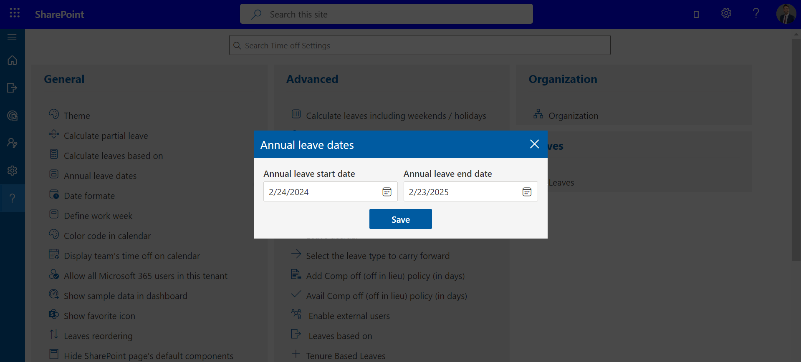
Examplelet say
candidate joining date = 15 th March 2023.
Annual Start date= 1 st Jan 2023
Annual End Date = 31st Dec 2023.
Casual Leaves = 24.✔ If accrued is disabled, candidate allocated leave would be (24 leaves /12 month) * Remaining months i.e., 9 months = 18 Leaves allocates for a years
✔ If accrued is enabled and type is Monthly, for march month allocated leave will be 2 and it increase by 2 on every month.
✔ If accrued is enabled and type is quarterly
24 leaves/ 3 quarter for year = 8 leaves for each quarter
Now (1st quarter= 8 leaves) / 4 months = 2 leaves
∴ 2 leaves * 2 months (remaining months to complete one quarter) = 4 leaves allocates in first quarter and then 8 leaves would allocate for in each quarter automatically.Date Format
If you change the date format, it will update in entire application.

Total Hours In Work Week
Here, you could add total working hours in a week.
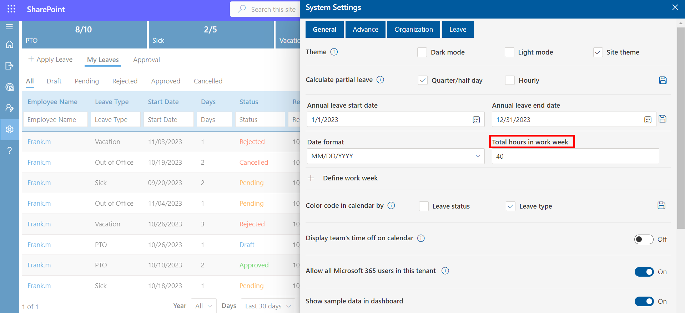
Work Week
In this table add 0 in the cell for weekend. Leave calculation would be done based on working days.
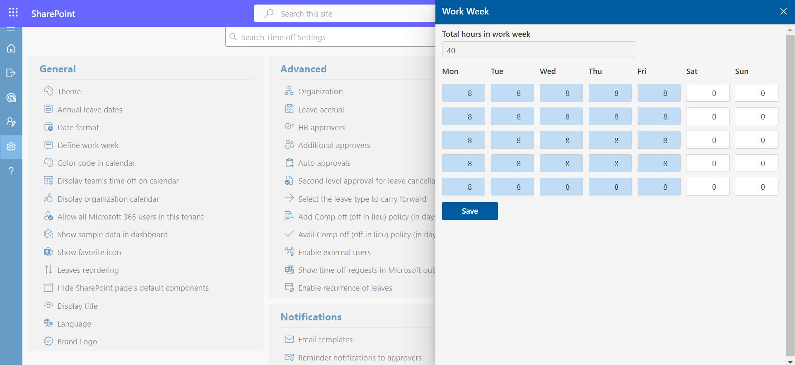
Color code in calendar by
Here, you could define color in calendar bases on leave status and leave type. This could be enabled, by selecting the check box and click on save icon.

Display team's time off on calendar
You can, if enabled, view the calendar of leaves taken by Team members in the same department.
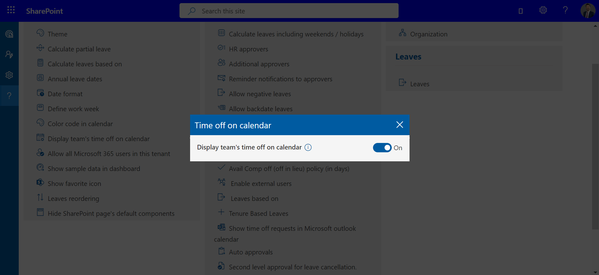
Allow all microsoft 365 users in this tenant
Microsoft 365 users would not get the access of application until users are added in users list of the application. If enabled, all the tenant users could use the application from the URL.

Show Sample data in Dashboard

Leaves reordering
Here You Can reorder the Leaves.

Hide SharePoint page's default components.
Select Configure to Process Continue.

Remove custom webpart CSS :Enable this toggle will remove space outside of Webpart.
Hide webpart title in sharepoint page :Enable this toggle will remove the Webpart title.
Hide side navigation panel in sharepoint page : Enable this toggle will hide side navigation Panel.
Hide top command bar on sharepoint page :Enable this toggle will hide the command bar on sharepoint page.
Hide top site header :Enable this toggle will hide top site header where app is running.
Hide comments wrapper :Enable this toggle will hide comments wrapper in sharepoint page where app is running.
Brand Logo
Admin may upload logo.
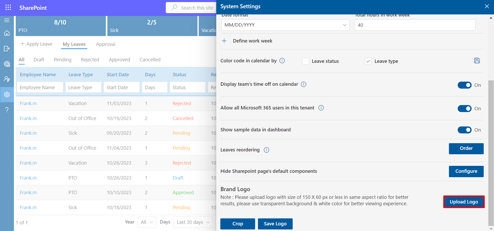
Advance
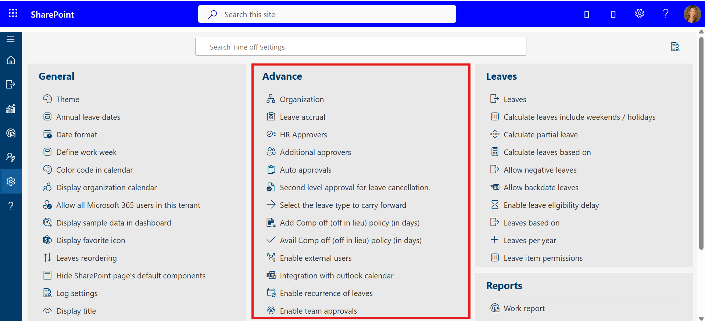
-
Calculate leaves include weekends / holidays
In case you want to include weekends as leaves when first and last day of the leave include weekend / holiday i.e. Someone apply leave from Friday to Monday, if the toggle switch is on, it will calculate four leaves and two leaves in case toggle is in off state. -
HR approvers
-
Additional approvers
Give applicants the option to choose another approver(s) in case their first-line manager is unavailable.
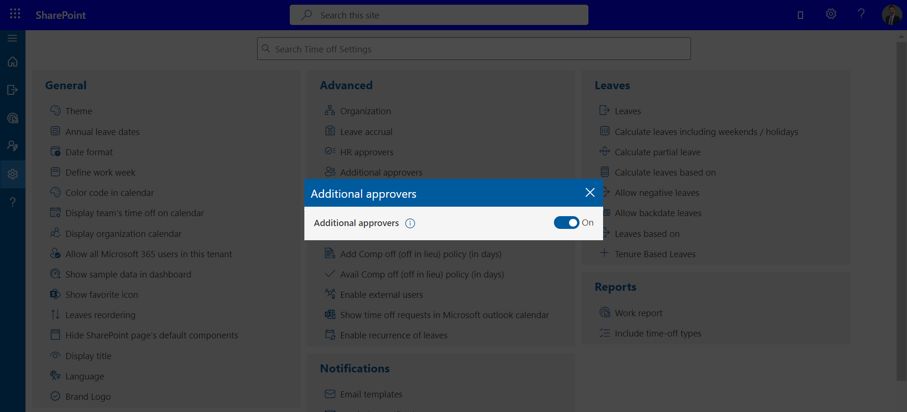 -
Reminder notifications to approvers
You can disable daily reminder notifications to approvers. -
Allow backdate leaves
User can be allowed to submit back date leaves by X days -
Leave accrual
By enabling this option, users will have their leaves accrued every month rather than allotted on the first day of the year. -
Add Comp off (off in lieu) policy (in days)
Comp (Compensatory) Off leave (also called compensatory off, comp off, or off-In-Lieu) allows team members to take time off in lieu of overtime pay if they've worked under irregular circumstances, such as: when business is closed, holidays, overtime hours, etc. Users are allowed to consume their comp off with X days from the day they worked under irregular circumstances. -
Avail Comp off (off in lieu) policy (in days)
Comp (Compensatory) Off leave (also called compensatory off, comp off, or off-In-Lieu) allows team members to take time off in lieu of overtime pay if they've worked under irregular circumstances, such as: when business is closed, holidays, overtime hours, etc. Users are allowed to consume their comp off with X days from the day they worked under irregular circumstances. -
Enable external users
You can allow external users to use this Time-off Manager app i.e. You can add them as guest / external user which is added in your office 365 tenant -
Leaves Based On
Leaves are based on 3 categories. This could be enabled by selecting the check box and click on Save button.
-
Regular: Total number of leaves could be entered. This leave
allocates for all users based on date of joining and accrued (optional). If
you want change leave for particular user, it can we done from user page.

-
Level Based Leaves: Level-based leaves and grades options would be
displayed under systems settings, here first define the grades for different
job title, finally add the leaves numbers for such grades from leave based
option.
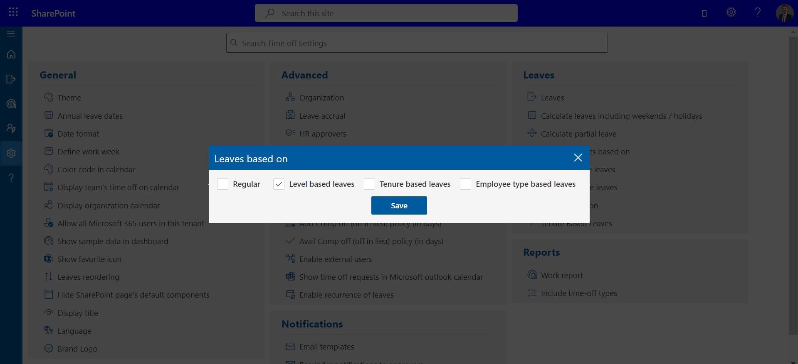
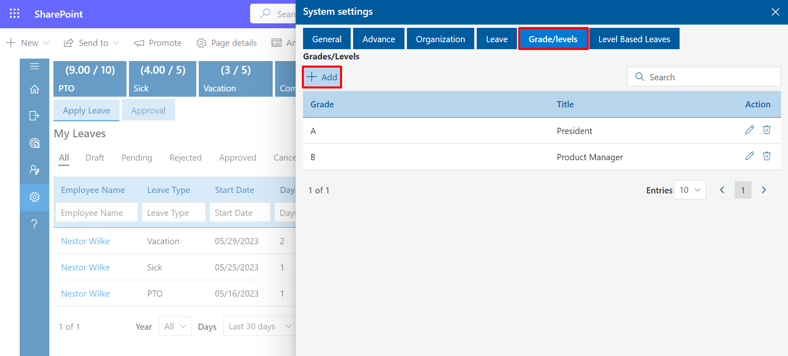
-
Tenure Based Leaves: Second-level approval for leave cancellation would be
available by enabling the tab. HR is the second-level approver for leave
cancellation (On default setting).

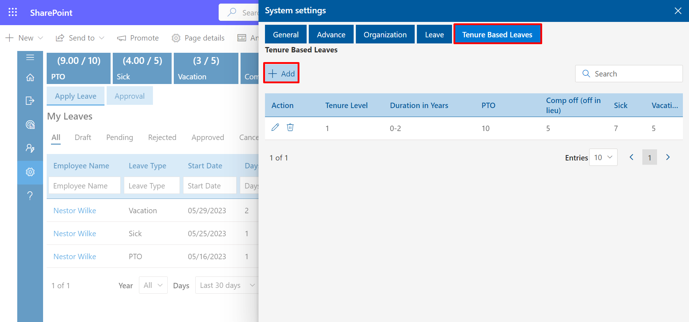
-
Regular: Total number of leaves could be entered. This leave
allocates for all users based on date of joining and accrued (optional). If
you want change leave for particular user, it can we done from user page.
-
Leave as Per
-
Show Time off requests in Microsoft outlook calender.
When we apply leave, Outlook Calendar is blocked. -
Auto Approvals.
leaves can approve automattically without permission.
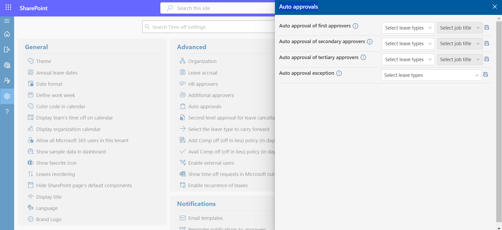 -
Second level approval for leave cancellation.
HR is Second level approver for Leave Cancellation.
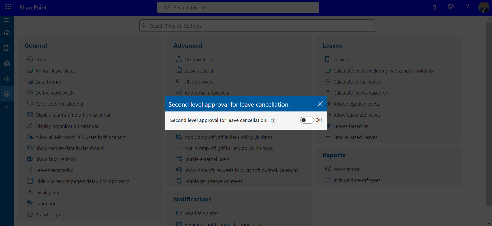 -
Display Title.
You can Hide/Show title field while applying leave. -
Enable recurrence of leaves .
If enabled, you can find control of recurrence on the top right corner after clicking on 'new request' on home page of the application
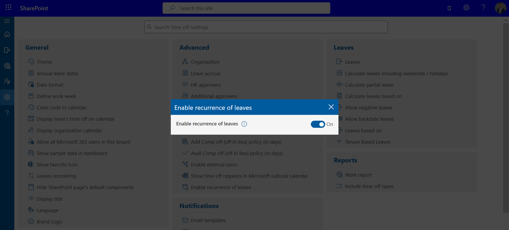 -
Language selection as browser default language.
Select browser Default Language.
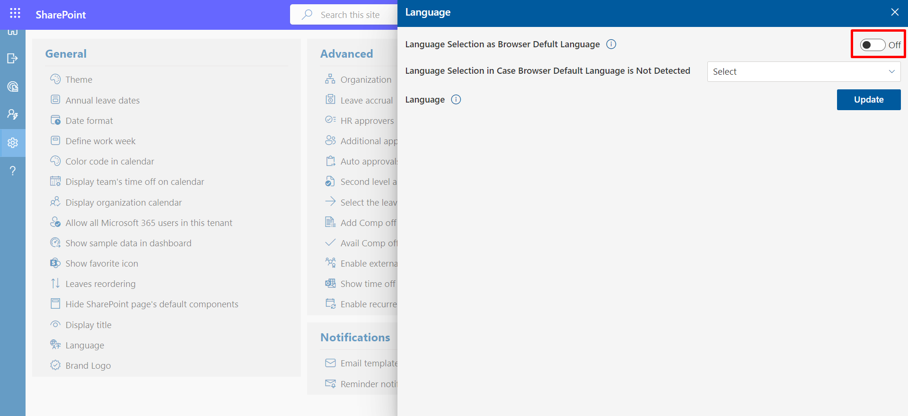 -
Language selection in case browser default language is not detected.
-
Email Template
Here you can configure email notification body and add more placeholders.
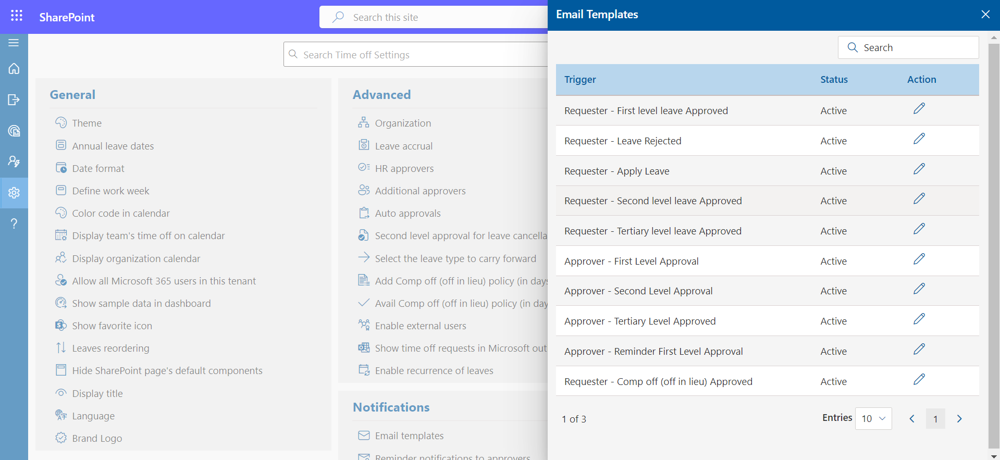


Select the leave type to carry forward
At the end of the year, one of the leave types can be carried forward to the next year.


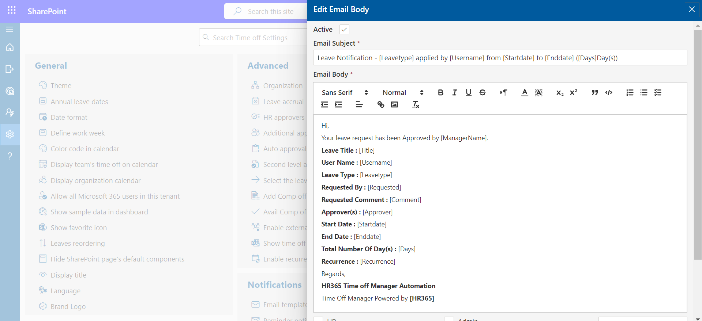
Organizations
Office Locationscould be added by clicking on Add button. For each location, a work week can be defined. In this table, add zero for weekend days and any number on working days. Use adds more button to add multiple office locations and finally click on Save button.
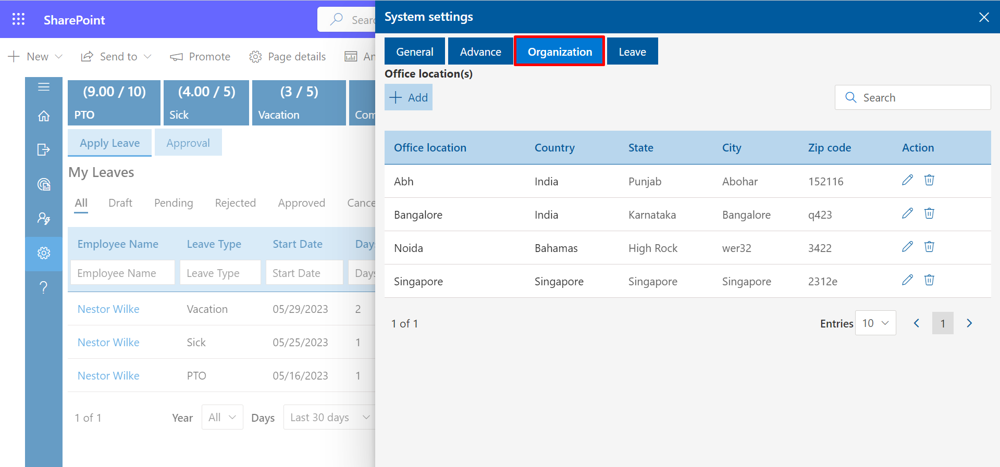
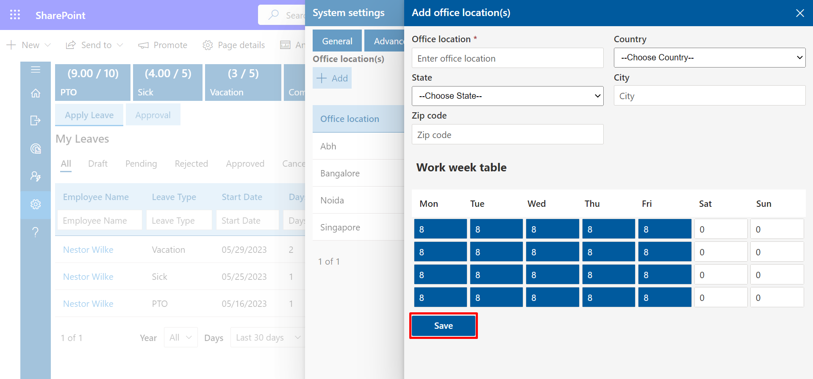
Once the office locations have been added all the locations would be displayed in the public holiday page and public holidays for each location could be added. These locations would show up in office location dropdown menu of added user panel. Public holidays and weekend leaves for user are based on location or office location.
Leaves
New leave type could be added, by clicking on add button and entering all the details. New leave types, status, accrual, show leave types in home page, partial day, leave notice in advance, secondary approver, tertiary approver etc could be added.

- Status: If it is enabled, it would display in apply leave form and user could apply for their leave.
- Accrual: Leave accrual can be enabled as per the organizations requirement. (In Advance setting accrual leave should be enabled and then select accrual type).
- Homepage: If this is enabled, it would display in home page as Leave Status.
- Deductable: If this is enabled, newly added leave would be deductible from the initial allocated count, in case if it is checked off, this leave will not have any count or maximum limit. Usually, it is being used to provide medical leaves, etc.
- Partial Day: If this is enabled for particular leave, user can be able to apply leave for partial day (0.5 or 0.25 leave).
- Leave Notice in Advance: You can enter the number of days you want the leaves to applied in advance.
- Show in calendar: Show/hide applied leaves on the calendar of apply leave form from the leave settings.
- Secondary Approver: You can select HR or manager of manager or any user
as seconder approver. Select HR or MoM check box and enable switch. You can type
person in people picker box, click on save button and enable switch. If Fist
approver (i.e., Manager of user) approve the leave request, request goes to second
approver.
You can also make some second approver as auto approver from the advance settings, there you have to select the leave types, job title and finally click on save icon.
- Tertiary approver: You can select HR or manager of manager or any selected email id as tertiary approver.
- Import leaves: You may import leaves from the Leave tab (add balance leaves of last year through the bulk import).
- Firstly choose the file to click Choose File button then Click on Upload button to upload the the file

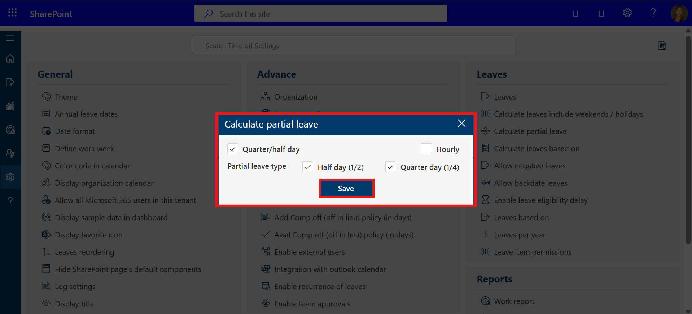